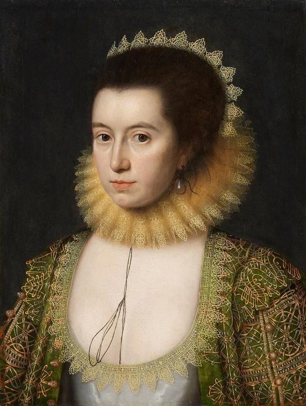

📜🖋️ William Shakespeare foi um dramaturgo e poeta inglês. Autor de tragédias famosas como «Hamlet», «Otelo», «Macbeth» e «Romeu e Julieta», foi considerado uma das maiores figuras literárias da língua inglesa.
William Shakespeare nasceu em Stratford-upon-Avon, no condado de Warwick, Inglaterra, no dia 23 de abril de 1564. Filho de John Shakespeare e de Mary Arden, seu pai foi comerciante de lã e chegou a ser tesoureiro e prefeito de Stratford.
Por volta de 1610, o dramaturgo retornou para sua cidade natal, local onde escreveu suas últimas peças. William Shakespeare faleceu em Stratford-upon-Avon, no dia 23 de abril de 1616, pouco depois de ter feito seu testamento. Foi enterrado na Trinity Church, em Stratford.
Ao longo dos anos, Shakespeare tornou-se o maior dramaturgo da literatura universal e sua consagração se deve a seus notáveis e complexos personagens, à dinâmica de suas peças e a riqueza de seus versos.

Anne Hathaway
(1556 - 1623)
📜🖋️Anne Hathaway era a esposa do dramaturgo e poeta William, ela era filha de Richard Hathaway,
um fazendeiro em Shottery, uma cidade situada a cerca de um quilômetro de distância.
Eles se casaram em 1582, quando Hathaway tinha anos e Shakespeare tinha 18. Ela e o marido tiveram três filhos:
em 1583 e os gêmeos Hamnet e Judith em 1596 .Muito pouco se sabe sobre sua vida a partir de algumas referências
em documentos legais. Sua personalidade e relacionamento com Shakespeare têm sido objeto de muita especulação
por muitos historiadores da escrita.